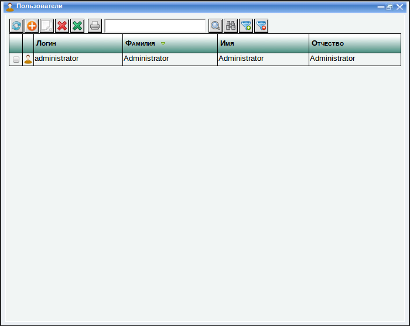

Введение
Данная программа предназначена для автоматизации розничной торговли
товарами и услугами с использованием технологий сетевого маркетинга и
дисконтных карт.
Программа работает через Интернет, с помощью обычного браузера.
Работать с программой могут только авторизованные пользователи, имеющие
логин и пароль. Права пользователя определяются его типом. Пользователь
может быть либо менеджером, либо администратором. Менеджеры могут вести
базу данных клиентов и оформлять заказы. Администраторы обладают
дополнительными возможностями: они могут выполнять настройку программы,
регистрировать в ней новых пользователей и удалять существующих.
Технологии сетевого маркетинга
Технологии сетевого маркетинга используются для вовлечения клиента в
бизнес. Клиент становится вашим агентом, который ищет других
клиентов для вас. За это он получает процент от заказов этих клиентов.
Этот процент в виде так называемых "бонусных рублей" начисляется на его
дисконтную карту. Израсходовать деньги, начисленные на дисконтую карту он может только сделав заказ в вашей компании.
При первом визите каждый клиент получает дисконтную карту и талоны с ее
номером, которые
он может раздавать своим знакомым с рекомендацией сделать заказ в вашей
компании. Если в дальнейшем один из таких
знакомых сделает заказ и предъявит талон, он получает
скидку, а человек, который дал ему талон, получает процент от суммы
заказа на свою дисконтную карту. Клиент, который привел другого клиента
(выдал ему талон) называется реферрером, а клиент, который пришел от
другого клиента (предъявил талон) называется реферралом.
Клиент, который привел другого клиента называется его прямым реферрером
или реферрером первого уровня. Если этого клиента тоже кто-то
привел, он считается реферрером первого уровня для этого клиента и
реферрером второго уровня для первого клиента. Может быть любое
количество уровней реферреров и каждый получает свой процент от заказа
данного клиента. Шкала скидок устанавливается в окне настроек программы.
Начало работы
При запуске программы в первый раз, к ней можно подключиться от имени
пользователя 'administrator' с паролем '111111'. Данный пользователь
имеет полномочия системного администратора. От его имени осуществляется
настройка программы.
Далее необходимо действовать в следующей последовательности.
Администратору
Заполнить "Основные сведения о компании". См. "Ввод основных сведений о компании".
Ввод основных сведений о компании
Перед тем как начать работать с клиентами и заказами, необходимо внести
основные сведения о предприятии. Это может сделать только пользователь,
имеющий тип "Администратор". Для того чтобы отобразить окно основных
сведений о предприятии нужно выполнить команду "Система" -->
"Основные сведения о компании".
Закладка "Основное"
На закладке "Основное" указываются параметры, используемые при
распечатке Приходного Кассового ордера и квитанции об оплате, которая выдается
клиенту после оплаты заказа.
При заполнении печатной формы Приходного кассового ордера в нее автоматически подставляются следующие поля из этого окна:
- Организация
- Код по ОКПО
- Руководитель
- Главный бухгалтер
- Кассир
- Основание приходного кассового ордера
Закладка "Скидки"
На закладке "Скидки" указываются скидки, которые положены клиентам при оформлении заказов.
- Скидка реферрала при первой покупке (руб.) - Если
клиент пришел в первый раз по рекомендации и предъявил талон с
реферальным номером, то ему предоставляется скидка в виде фиксированной
суммы в размере, указанном в поле.
- Скидки реферреров (%) - Шкала скидок реферреров. В этом поле перечислены проценты скидки для реферреров каждого уровня, начиная с первого. Скидки,
вычисленные по этим процентам (так называемые "бонусные рубли")
начисляются на дисконтные карты реферреров в момент проведения заказа,сделанного реферралом.
Закладка "Шаблоны"
В момент начисления скидок на дисконтные карты реферреров, им
автоматически отправляются оповещения по SMS и по электронной почте. На
этой странице можно создать и отредактировать шаблоны этих оповещений.
- Шаблон SMS-сообщения
-
текст SMS-сообщения, которое будет отправляться реферреру в момент
начисления бонусных рублей на его дисконтную карту. В шаблоне можно
использовать переменную '{сумма}'. Вместо нее будет подставляться сумма
начисленных рублей. Для того чтобы SMS гарантировано дошла, пишите ее
транслитом. Желательно чтобы SMS не превышала 45 символов.
- Адрес E-mail отправителя сообщения - электронный адрес, от имени которого реферреры будут получать оповещения о начисленных бонусных рублях по E-Mail.
- Тема E-mail-сообщения - тема E-mail-сообщения о бонусных рублях, которое будет отправляться реферрерам в момент начисления на их дисконтные карты.
- Шаблон E-mail-сообщения - текст E-mail-сообщения о бонусных рублях, которое будет отправляться реферрерам в момент начисления на их дисконтные карты.
В тексте шаблона сообщения может использоваться переменная '{сумма}',
которая автоматически заменяется на сумму начисленных бонусных рублей.
После внесения изменений в настройки, необходимо нажать кнопку "Сохранить".
Работа с учетными записями пользователей
Работа со списком пользователей
Для доступа к списку учетных записей нужно выполнить команду "Справочники" --> "Пользователи" из меню. Появится список учетных записей пользователей, зарегистрированных в системе.

Чтобы открыть карточку пользователя, нужно сделать двойной щелчок мышью по строке с его именем.
Для работы с пользователями предназначы кнопки панели инструментов.
- Чтобы добавить нового пользователя, нужно нажать кнопку . Появится карточка, в которой можно ввести его логин, пароль, тип (менеджер или администратор) и другую информацию.
- Для выполнения операций с существующими пользователем, нужно
сначала выделить строку с его именем, нажав на ней мышью один раз
(строка окрасится в синий цвет). Также для некоторых операций можно
выделить сразу группу пользователей. Для этого нужно включить их флажки
в первой колонке.
Операции с существующими пользователями:
|
Создать точную копию выбранного
пользователя. При нажатии на эту кнопку появляется карточка нового
пользователя, в которой все поля заполнены из карточки текущего
пользователя
|
 |
Установить на выделенных
пользователях пометку удаления. При нажатии на эту кнопку, пользователи
помечаются на удаление и их в дальнейшем можно удалить с помощью
операции "Удаление помеченных объектов" (меню "Система" --> "Удаление помеченных объектов").
|
 |
Снять пометку удаления с выделенных пользователей.
|
Если пользователь помечен на
удаление, это не значит что он не активен и его учетную запись нельзя
использовать для подключения. Чтобы заблокировать пользователю доступ к
системе нужно либо полностью удалить его (выполнить процедуру "Система" --> "Удаление помеченных объектов"), либо изменить его пароль на никому неизвестное сочетание символов.
Работа с карточкой пользователя
При создании нового пользователя, при
открытии существующего пользователя или при создании нового
пользователя копированием, появляется его карточка.
Все поля, кроме "Фото" обязательны для заполнения.
- Логин - имя пользователя, которое он будет вводить при подключении к системе
- Пароль - пароль, который пользователь будет вводить при подключении
- Пароль еще раз - подверждение введенного пароля пользователя
- Тип - тип пользователя:
менеджер или администратор. Тип определяет права, которые пользователь
будет иметь в системе и интерфейс, который будет отображаться в его
браузере. Менеджеры имеют ограниченные возможности: они могут вести
базу клиентов и оформлять их заказы, соответственно и интерфейс
содержит только функции, необходимые для выполнения этих задач.
Администраторы имеют полный доступ ко всем функциям программы.
- Фамилия - фамилия пользователя (справочно)
- Имя - имя пользователя (справочно)
- Отчество - отчество пользователя (справочно)
- Фото - фото пользователя (справочно)
После заполнения всех полей нужно нажать кнопку "Сохранить". Новый пользователь появится в списке пользователей. После этого можно подключаться к системе от имени этого пользователя.
Замечания по подключению пользователя
Если вы хотите попробовать
подключиться от имени нового пользователя сразу же с этого компьютера,
необходимо сначала отключиться от системы. Для этого нужно полностью
закрыть браузер (все окна браузера), подождать около минуты, снова
открыть браузер и подключиться к системе.
Пользователь может работать от имени
своей учетной записи только с одного компьютера одновременно и только в
одном окне браузера. Если пользователь, пытается создавать более одного
соединения от имени своей учетной записи, будет появляться сообщение:
"Пользователь с учетной записью <логин> уже работает в системе. Доступ запрещен".
Если это сообщение появляется и точно
известно, что пользователь создает только одно подключение, значит его
прошлый сеанс еще не завершился, нужно подождать около минуты и
попробовать подключиться еще раз.
Работа менеджера в программе
Интерфейс менеджера показывает список клиентов на закладке "Контрагенты".
Задача менеджера заключается в том чтобы принять клиента, определить,
есть ли он в списке и если нет, завести его карточку. При этом менеджер
должен выдать новому клиенту дисконтную карту и если клиент предоставил
талон с реферальным номером, ввести этот номер в его карточку, в поле
"
Номер реферрера" и предоставить разовую скидку за предъявление этого
талона.
Чтобы создать нового клиента, нужно нажать кнопку и появится карточка нового клиента. Работе с карточкой клиента посвящен следующий раздел.
Для поиска уже заведенного клиента предназначены различные средства.
- Можно упорядочить список в алфавитном порядке по любой колонке
(по ФИО, по номеру дисконтной карты или по номеру реферрера). Для этого
нужно нажать по заголовку колонки левой кнопкой мыши.
- Можно найти клиента по ключевому слову (по части фамилии или
имени, по номеру дисконтной карты или по значению любой другой
колонки). Для этого нужно ввести ключевое слово в поле поиска и нажать
кнопку
 .
Строка в которой обнаружится совпадение подсветится. Для того чтобы
продолжить поиск, нужно снова нажать эту кнопку, подсветится следующая
строка, в которой будет найдено совпадение.
.
Строка в которой обнаружится совпадение подсветится. Для того чтобы
продолжить поиск, нужно снова нажать эту кнопку, подсветится следующая
строка, в которой будет найдено совпадение.
Другие операции с существующими клиентами:
|
Создать
точную копию выбранного клиента. При нажатии на эту кнопку
появляется карточка нового клиента, в которой все поля заполнены из
карточки текущего контрагента.
|
|
Установить на выделенных клиентах пометку удаления. При нажатии на эту кнопку клиенты
помечаются на удаление и их в дальнейшем можно удалить с помощью
операции "Удаление помеченных объектов" (меню "Система" --> "Удаление помеченных объектов").
|
|
Снять пометку удаления с выделенных клиентов.
|
Работа с карточкой клиента
При создании нового клиента появляется его карточка.
- ФИО - Фамилия, Имя и Отчество
- № дисконтной карты - при
создании нового клиента менеджер выдает ему дисконтную карту и заносит
ее номер в это поле. Для существующих клиентов, у которых на дисконтной
карте есть остаток или были движения это поле недоступно для
редактирования.
- Номер реферрера - если новый клиент пришел от другого клиента и предъявил талон с номером, менеджер вносит номер
в это поле. Для существующих клиентов, в случае если бонусные рубли от
них уже начислялись реферрерам, это поле недоступно для редактирования.
- Номер мобильного телефона
- по этому номеру будут отправляться SMS-сообщения каждый раз, когда на
дисконтную карту данного клиента будут начисляться бонусные рубли.
Номер начинается не с цифры 8, а с цифры 7. Шаблон SMS-сообщения
администратор может создать или отредактировать в окне "Основные
сведения о компании".
- Адрес E-mail - по этому адресу будут отправляться оповещения каждый раз, когда на дисконтную карту
данного клиента будут начисляться бонусные рубли. Шаблон E-Mail
сообщения админстратор может создать или отредактировать в окне
"Основные сведения о компании".
- Фото - позволяет загрузить фото клиента для визуальной идентификации. Это поле не обязательно.
- Прочая информация - в поле указывается любая дополнительная информация о клиенте, например его дополнительные телефоны и адреса.
После ввода данных нужно нажать
кнопку "Сохранить". Программа проверит корректность данных и если ошибок
не возникнет, клиент будет создан и появится в списке клиентов.
После сохранения, в карточке клиента появятся дополнительные закладки "Заказы" и "Дисконтная карта",
с помощью которых менеджер может оформлять для этого клиента заказы и в
любой момент посмотреть остаток и обороты по счету его дисконтной карты.
На закладке "Заказы" отображается список заказов, которые делал данный клиент.
Здесь можно просматривать заказы,
которые данный клиент делал раньше или оформить новый заказ. Подробнее
об оформлении заказа можно прочитать далее в разделе "
Оформление заказа".
На закладке "Дисконтная карта" отображается состояние счета дисконтной карты данного клиента.
В колонке "Приход"
отображаются поступления на счет. Поступление на счет дисконтной карты происходит в
момент проведения заказа от клиента, которого привел данный клиент. В
колонке "Регистратор" отображается информация о заказе, благодаря
которому произошло данное поступление.
В колонке "Расход"
отображаются списания с дисконтной карты. Списание происходит в момент
проведения заказа клиента. В этот момент сумма, накопленная на карте
списывается как скидка.
В поле "Остаток"
отображается текущий остаток на дисконтной карте. Менеджер может в
любой момент увидеть и сообщить клиенту остаток на его дисконтной карте.
Оформление заказа
Оформить заказ клиента можно двумя способами.
Во первых это можно сделать из списка заказов в карточке клиента, перейдя на закладку "Заказы" и нажав кнопку (Добавить).
Также, в программе есть общий список заказов, который можно увидеть либо перейдя на закладку "Розничные продажи" в рабочей области программы, либо выполнив команду "Документы" --> "Розничные продажи". Можно оформить заказ, находясь в этом списке также нажав кнопку и указав клиента, от имени которого создается заказ.
Документ заполняется сверху вниз.
В поле "Контрагент"
указывается клиент. Если заказ оформляется из карточки клиента, это
поле заполнится автоматически и будет недоступно для редактирования. При
указании клиента вычисляется доступная на дату документа сумма скидки.
Она появляется в строке "Доступная скидка на дату документа".
Если клиент пришел в первый раз и
предъявил талон с номером реферрера, ему предоставляется скидка в виде
фиксированной суммы. Эта сумма указывается в окне "
Основные сведения о компании" на закладке "
Скидки".
В ином случае, если клиент пришел не в первый раз, в качестве доступной
скидки появляется сумма, накопившаяся на его дисконтной карте.
Далее нужно заполнить таблицу
товарами и услугами, которые заказывает клиент. По умолчанию в таблице присутствует одна строка с наименованием "Услуга". Если это не критично для учета, можно вписать всю сумму заказа в эту строку, заполнив поле "Цена" и "Количество". Поле "Сумма" вычисляется автоматически.
С помощью кнопок над таблицей, можно
добавлять и вставлять в таблицу любое количество строк, а также удалять
строки и перемещать их вверх и вниз.
Большинство операций выполняется с выделенной строкой. Чтобы выделить строку, нужно просто нажать на ней левой кнопкой мыши.
|
Добавить строку в конец таблицы
|
|
Добавить точную копию текущей
строки в конец таблицы. Нужно выделить строку, нажать эту кнопку и в
таблице появится ее точная копия.
|
|
Вставить строку над текущей. Нужно выделить строку и нажать эту кнопку. Новая строка вставится над текущей.
|
|
Удалить текущую строку. Нужно выделить строку и нажать эту кнопку. Строка удалится.
|
|
Переместить текущую строку вверх. Нужно выделить строку и нажать эту кнопку. Строка переместится на одну строку вверх.
|
|
Переместить текущую строку вниз. Нужно выделить строку и нажать эту кнопку. Строка переместится на одну строку вниз. |
В каждой строке нужно вводить
наименование, цену и количество. При этом автоматически вычисляется
сумма по каждой строке и общая сумма заказа.
После того как таблица заполнена, автоматически вычисляется "Сумма" заказа, от нее отнимается "Сумма скидки" и остаток вычисляется в строке "ВСЕГО К ОПЛАТЕ".
Именно эту сумму должен заплатить клиент. Далее менеджер должен принять
у клиента деньги и ввести сумму, которую получил от клиента в поле "ПОЛУЧЕНО ОТ КЛИЕНТА" и выйти из этого поля (щелкнуть в произвольном месте окна). При этом вычислится сдача, которую он должен выдать клиенту.
После того как клиент полностью определился с заказом, его нужно провести. Для этого предназначена кнопка "Провести". При проведении документ делает проводки по счетам дисконтных карт.
- Сумма скидки списывается со счета дисконтной карты текущего клиента.
- Происходит начисление бонусных рублей на счета дисконтных карт всех реферреров данного клиента.
Для вычисления бонусных рублей используются проценты из шкалы уровней
реферреров. Эту шкалу может редактировать администратор в окне "Основные сведения о компании" на закладке "Скидки".
- При
начислении бонусных рублей, каждому реферреру отправляется уведомление
об этом по SMS и по E-Mail. Шаблоны SMS и E-mail сообщений можно
создать в окне" Основные сведения о компании" на закладке "Шаблоны".
Проведение документа это ответственная
операция. Менеджер должен быть уверен что сумма заказа окончательная
прежде чем нажимать кнопку "Провести".
В программе предусмотрена защита от случайного нажатия на эту кнопку.
Менеджер должен подтвердить свое намерение провести документ. Для этого
после нажатия на эту кнопку появляется окно, в котором он должен ввести
большими
буквами слово "ПРОВЕСТИ". Документ проводится только после этого.
После проведения менеджеру запрещено
редактировать документ и отменять проведение. Это может делать только
пользователь с правами администратора. Однако не рекомендуется это
делать даже администратору, особенно если у клиента, указанного в
заказе есть реферреры. Это отменит начисление бонусных
рублей после того как оповещения об этом были отправлены.
Существует возможность сохранить заказ не проводя его. Для этого используется кнопка "Сохранить".
Менеджер может сначала сохранить заказ, а провести его позднее. После проведения заказа
менеджер может вывести на печать Приходный кассовый ордер и выдать
клиенту квитанцию об оплате на сумму, которую он оплатил (строка ВСЕГО К ОПЛАТЕ). Для этого нужно нажать кнопку "Печать", появится печатная форма Приходного кассового ордера.
Для заполнения таких полей как "
Организация", "
Код по ОКПО", "
Главный бухгалтер", "
Кассир" и "
Основание" используются значения, указанные в окне "
Основные сведения о компании".
Для вывода печатной формы документа на принтер нужно нажать кнопку

и появится стандартное окно печати Web-браузера. В нем можно установить
различные параметры печати, такие как поля и колонтитулы. В браузере
Google Chrome наиболее продвинутая и удобная подсистема печати.
Рекомендуем для печати использовать Google Chrome.
Работа со списком заказов
В программе можно работать либо со списком заказов конкретного клиента, либо со списком всех заказов.
Чтобы перейти к списку заказов конкретного клиента нужно
открыть карточку этого клиента и перейти на закладку "
Заказы".
Чтобы перейти к общему списку заказов, нужно перейти на закладку "Розничные продажи" в рабочей области программы.
Список заказов во многом схож со
списком клиентов и методы работы с ним мало отличаются от работы со списком клиентов. Основное
отличие в том, что у заказа есть состояние. Заказ может быть либо
проведен, либо не проведен, либо помечен на удаление. Состояние документа отображено на его пиктограмме во второй колонке:
 |
Документ не проведен
|
|
Документ проведен
|
|
Документ помечен на удаление
|
Для выполнения операций с заказом нужно
сначала выделить строку с ним, нажав на ней мышью один раз
(строка окрасится в синий цвет). Также для некоторых операций можно
выделить сразу группу документов. Для этого нужно включить их флажки
в первой колонке.
Операции с заказами:
|
Создать новый заказ
|
 |
Провести выбранный заказ или заказы
|
|
Пометить выбранные заказы на удаление. (см. Удаление помеченных объектов)
|
|
Снять пометку удаления с выбранных заказов
|
|
Установка периода. При нажатии
на эту кнопку появляется окно установки даты начала и даты окончания
периода. При установке периода список будет отображать только
документы, дата которых попадает в этот период.
|
|
Поиск заказа по любой колонке используя ключевое слово. Ключевое слово вводится в поле перед этой кнопкой.
|
 |
Фильтрация заказов по значению в текущей колонке. Нужно
выделить нужное значение и нажать эту кнопку. Таблица отфильтруется
таким образом, что в ней останутся только такие заказы, у которых такое
же значение в этой колонке.
|
 |
Отменить фильтрацию
|
Работа администратора в программе
Администратору доступны все такие же функции, как и менеджеру, также он может:
- Управлять пользователями, как описано в разделе "Работа с учетными записями пользователей".
- Вносить основные сведения об организации, как описано в разделе "Ввод основных сведений о компании"
- Распроводить и удалять документы, удалять клиентов, как описано далее
- Может пользоваться расширенными возможностями при работе со списками клиентов и заказов (больше кнопок над списками)
- Формировать сводные отчеты по регистру "Дисконтные карты"
Удаление объектов
Удаление объектов происходит в два этапа. Сначала объекты помечаются на
удаление, а затем выполняется процедура "Удаление помеченных объектов".
Эта процедура определяет, возможно ли удалить каждый из помеченных
объектов. Объект можно удалить только в том случае, если его не
используют никакие другие объекты. Например, если вы пометили на
удаление Контрагента, а этот контрагент указан в Заказах, то
его нельзя будет удалить, не убрав его из этих заказов или не
пометив эти заказы на удаление тоже.
Чтобы удалить помеченные объекты, нужно запустить процедуру "Удаление помеченных объектов", выполнив комаду "Система" --> "Удаление помеченных объектов" из главного меню.
Программа выяснит, можно ли удалить каждый помеченный на удаление объект и отобразит результаты в таблице "Помеченные объекты".
Часть объектов можно удалить, а часть нет. Если объект нельзя удалить,
значит в базе данных есть другие объекты которые ссылаются на него.
Чтобы увидеть эти объекты, нужно выделить строку с объектом который
нельзя удалить. Список объектов, которые на него ссылаются отобразится
в таблице "Зависимости".
Далее нужно разобраться с зависимостями. Нужно либо пометить их на
удаление тоже, либо убрать из них ссылки на объект, который необходимо
удалить. Зависимости можно открывать прямо из таблицы зависимостей.
После того как все проблемы с зависимостями решены, нужно пометить
объекты, которые необходимо удалить в таблице "
Помеченные объекты" и
нажать кнопку
. Объекты будут окончательно удалены из базы данных. Восстановить их после этого невозможно.
Отчеты по дисконтным картам
Администратор может посмотреть отчет по состоянию дисконтных карт сразу всех клиентов. Для этого нужно выполнить команду "Отчеты" --> "Дисконтные карты" из меню.
Установите период, выберите форму отчета и нажмите кнопку .
По умолчанию отчет выдается в форме "
Остатки". В этом случае появится такая же таблица, как на закладке "
Дисконтные карты" в
карточке контрагента, но она будет отображать только движения и остатки за указанный период по каждому клиенту.
Также есть форма "
Основной", которая просто выдает список проводок по регистру "
Дисконтные карты". По этому отчету можно увидеть общий остаток на всех дисконтных картах клиентов.